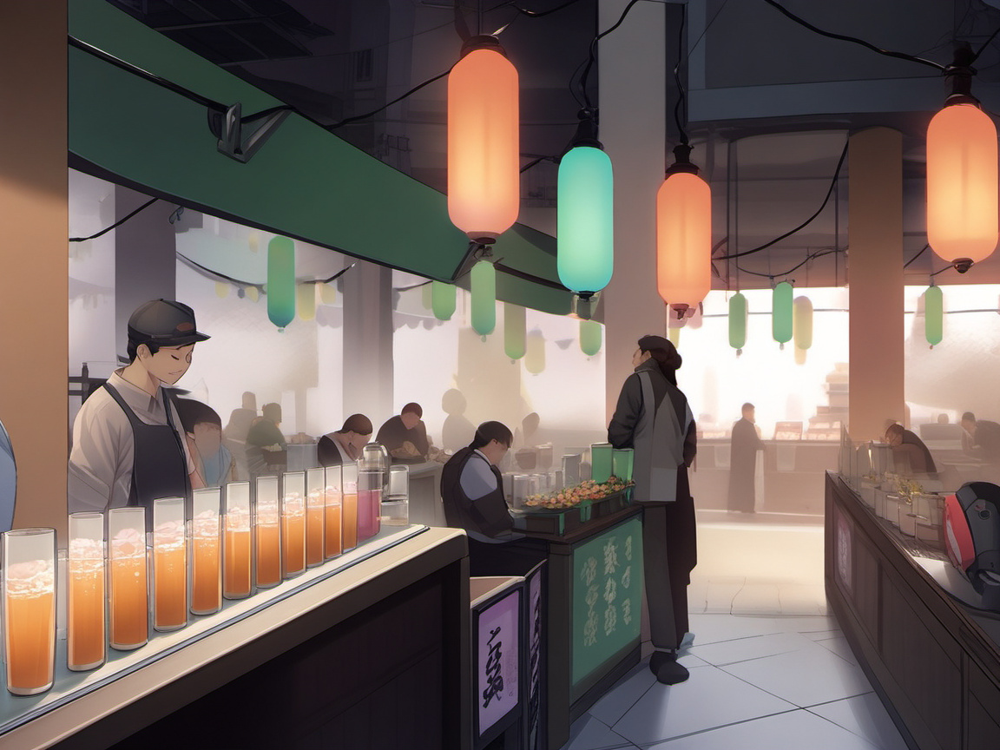
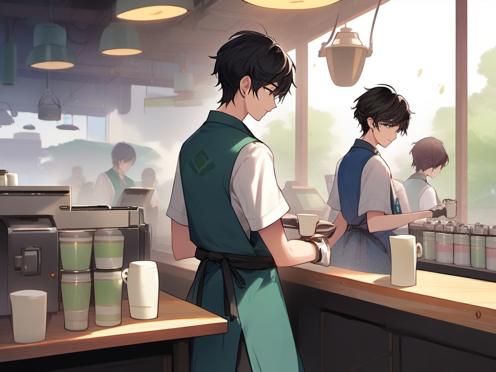
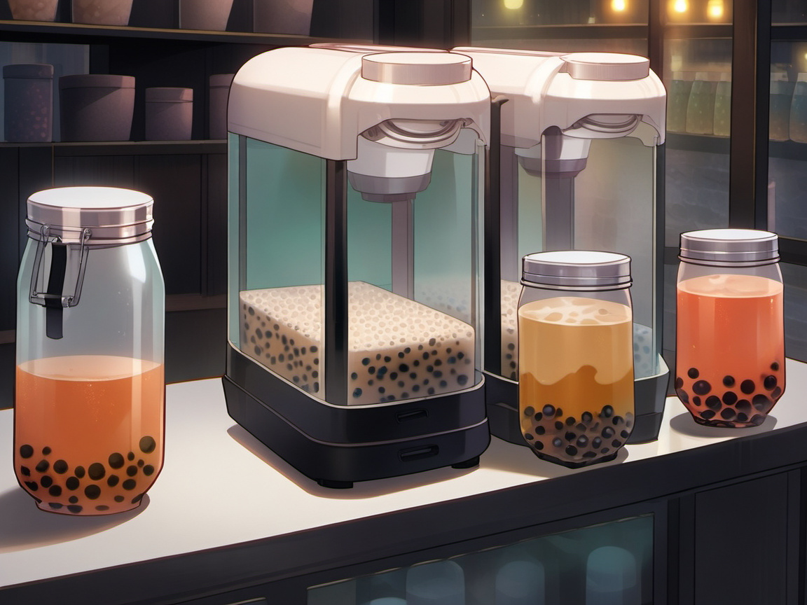
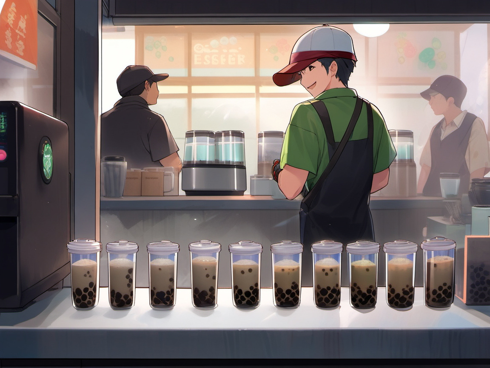
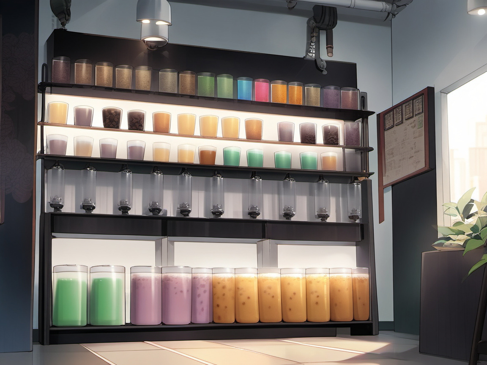

DeepSeek Harness 漫画书 · 奶茶版23 幅漫画 · 15 章新手🐣 / 老手🦉 双轨
智能奶茶店经营手册
一家奶茶店的完整解剖：配方不变，换谁来摇这杯茶，味道都不变——这句行话，就是 DeepSeek Harness 契约哲学的全部。
从"顾客说一句就出杯"到"一条大街开满同标准的奶茶店"，15 章讲完整个内核。
新手只看漫画和🐣绿框；老手加看🦉紫框直达源码。
👨 顾客用户/意图
只说要喝什么
只说要喝什么
🧋 奶茶师模型+回合循环
想配方、拿工具
想配方、拿工具
🕴 经理审批与权限
动钱必须他按
动钱必须他按
🦉 管理员档案室猫头鹰
守唯一账本
守唯一账本
🤖 机器人工具/服务
按配方卡干活
按配方卡干活
📕 账本会话日志
永不涂改
永不涂改
PART 1
入门篇 · 这家奶茶店凭什么
看完这七章，你就明白了 harness 存在的意义和它的四根柱石。
01为什么是奶茶店
左：传统软件——顾客照着流程卡自己调茶，茶洒了一地；右：智能奶茶店——说一句"少糖去冰乌龙奶茶"
🐣 新手看
传统 App 把"先点什么、后点什么"冻死在按钮里——因为过去计算机不懂你的意图。现在模型懂了：你只说"一杯少糖去冰的乌龙奶茶"，配方和流程交给操作台。这就是"agent 驱动"四个字的全部含义。🦉 老手看
范式从请求→处理→响应 变为 意图→会话→回合：一次 HTTP 请求毫秒级，装不下一个几分钟的 agent 回合（含工具执行与人工审批）——所以状态必须外置到会话日志（见第 7 章），而不是塞在请求里。金句：App 是冻住的流程，harness 是让流程活过来的操作台。
02一条大街的规则：一切皆插件

一条大街很多家奶茶店：各有风味，插座标准全一致——关一家，别家照常营业
🐣 新手看
这条大街上开了很多家奶茶店：家家有自己的招牌和配方，但都插在同标准的水电网上——谁家想歇业，拔插头走人，隔壁毫发无伤。连"怎么摇茶"的操作台本身也是一个可拔插的盒子。🦉 老手看
大街=Cordis 框架（vendored，vendor/cordis）：水电网=共享 Context；插拔=注册即效果（ctx.effect() 返回回收函数，卸载即回退）；"无特权内核"官方原文在 docs/architecture.md:13——连 agent-loop 都是普通插件（packages/core/agent-loop）。店里的三条通道（事件的三种脾气）
广播巷 / 接力巷 / 严检巷——不同消息走不同通道
🐣 新手看
店内消息分三种走法：大喇叭（广播巷，人人听见）；接力棒（接力巷，每人可改造再传，也可喊停）；排队长龙（严检巷，一个一个来，谁都不能插队）。哪种消息走哪条道，是开店时就写进规矩的。🦉 老手看
对应 Cordis 四种事件分发模式：emit（通知）/ waterfall（环绕中间件，listener 必须调 next() 委托、不调即短路——审批裁决就用它）/ serial（有序检查点，如 agent/turn-stopping）/ parallel（各自独立）。事件的分发模式是其公共契约的一部分（docs/cordis-primer.md）。金句：插件的世界里没有后门——想干预，只有明文规定的通道。
03开业清单：层层叠加压成一本
基础规章 → 品牌手册 → 本店补丁，层层压成一本《开业手册》
🐣 新手看
开一家新店不需要从零写规章：拿基础规章（每家店都要的），叠上品牌手册（连锁的统一要求），再叠一张本店补丁（"我们店不加香精"）。机器把它们压成一本手册——每一条都可被上层覆盖。同品牌还能有"标准店/档口店/深夜店"几种预制模板。🦉 老手看
这就是 profile / bundle / patch 层序组合（docs/architecture.md:15-37）：dsh-base 是第一层；bundle 是可分发的配置层；patch 按 id 整体替换某行配置；dsh --dump-config 打印你机器真实启动的树。"标准/档口/深夜"= 内核 preset（standard/PTC/minimal/creative，per-session 组合，空会话可换）。金句："现在运行的这家店是什么"，完全由清单叠出来的那本手册说了算。
04制茶团队可以更换

人工摇杯 / 机械臂 / 全自动亭——出杯口的产品一模一样
🐣 新手看
奶茶行业的天赋：**配方是标准化的**。人工团队摇、机械臂摇、全自动亭出——同一张配方卡，出来的那杯茶应该一个味。换谁来摇，配方不变，流程不变，味道不变。菜单（契约）是店里的，制茶团队（模型）是雇来的。🦉 老手看
LLM 层是适配器体系：实现LlmAdapter.stream() 即可注册（packages/llm/llm/src/index.ts:700）；中立流式协议 StreamChunk 让上层只见统一词汇。官方刻意养了两个真实现互为考题（twin adapters，Agent Note 2026-06-13）：任何只有一个适配器能表达的词汇都被视为方言 bug。2026-08 升级后目录里还有了能看图的视觉模型（就像能看小票照片的自动亭）。金句：配方不变，换谁来摇这杯茶，味道都不变——这就是契约的威力。
05一杯茶的轮回：环形传送带
思考站 → 工具架 → 检查站，循环直到取餐口绿旗升起
🐣 新手看
一张杯形订单卡上传送带：到思考站奶茶师决定下一步 → 到工具架机器人递上雪克杯/珍珠勺 → 到检查站猫头鹰问"还欠东西吗"。欠（工具还没回话/又有新单插队）就再转一圈；不欠，取餐口绿旗升起、出杯。一整圈叫一个"回合"，每站叫一"步"。🦉 老手看
turn/step 循环在 packages/core/agent-loop/src/agent.ts:246-330：消息经 inbox 三入口进入（followup 开新回合 / steer 插队下一步 / inject 塞资料不叫醒，packages/core/agent/src/inbox.ts）；回合是否继续由数据决定——检查站是 agent/turn-stopping（serial），想拦就往 inbox 塞新指示，机器重新盘点，监听器顺序不影响结果。金句：这杯茶什么时候出，不看谁嗓门大，只看账上还欠不欠。
06配方卡与三道关口
配方卡墙 + 留样秤 / 盘点机器人 / 打包机——三台机器按配方卡干活
🐣 新手看
菜单和配方卡是签给机器的承诺书：茶底几克、糖几分、冰几块写得清清楚楚，留样秤（出品校验）、盘点机器人（库存登记）、打包机（程序消费）照单干活。糊弄配方卡 = 拆质检——那杯茶坏了没人拦，仓库账全是错的。🦉 老手看
工具管线三道口（packages/core/tools/src/index.ts）：tools/pre-execute（waterfall，裁 allow/deny/ask）→ tools/execute（超时/重试包装）→ tools/post-execute（可改文案/附加上下文）；输出契约=canonical JSON + output.render 投影。UI 卡片是 args 的纯函数——回放逐像素重现。动钱必须过经理
托盘上放着印章和会员卡——动真格（改储值）前，等经理按钮
🐣 新手看
封一杯茶不用请示；但要动真格——给会员卡储值、改账上的钱——必须把托盘端到经理台前等按钮。经理不在场默认拒绝——宁可这单不做，不许乱动钱。两张卡同时递？只认先到那张。🦉 老手看
fail-closed 是审批缝的品格（dsh-user-approval，无 answerer 即拒绝）；裁决经 approval/asked + decided 成对落日志=免费审计；Loom 的 SSE 审批卡断线幂等重发、并发第二答复 409。QA 修过的真实漏洞也在这条线上：审批只认 owner、匿名身份禁用账号命名空间前缀。金句：权力走关口，关口写进账本——没有关口之外的权力。
07账本与禁令：唯一事实来源
猫头鹰守着永不涂改的账本，六个部门读同一本
🐣 新手看
店里发生的每件事按页码记进一本永不涂改的账本：顾客点了什么、奶茶师每步做了什么、每杯的留样数据、经理批没批。奶茶师做下一杯前重读账本（不是凭记忆）——所以永不记错历史、店歇业重开翻开接着干。奶茶师没有记忆，记忆是每次算出来的。🦉 老手看
会话日志 append-only，事件seq 严格连续（packages/core/session/src/index.ts:628）；模型上下文=deriveMessages() 从日志投影（非存储）；"模型可见⟺已落日志"是最高军规，有运行时不变量断言（agent-loop/src/invariant.ts:21）：请求与日志 fold 结果逐字段相等才放行。回放=事实重放，不是模拟。小纸条禁令
奶茶师一手摇杯一手拒收纸条——只认玻璃罩下的账本
🐣 新手看
有人递小纸条（"这杯多放珍珠别记账"）？奶茶师摆手拒绝。想影响奶茶师，先把话写进账本。不然半年后重放账本，还原不出奶茶师当时真实看到的世界——整座"回放可信"的大厦会塌。🦉 老手看
所有模型可见输入必须经 durable 事件通道：记忆召回走form:'recall' 的 user/message、工具附言走 additionalContexts、插件上下文走 agent.inject()——殊途同归全部落日志。agent/request waterfall 明文禁止改消息，只能改 config。金句：账本之外无真相，这是回放、审计、分叉共同的命根子。
PART 2
内核篇 · 深水区
账本变厚、流程提速、人手不够、包间太多、合同干太久——奶茶店成长的五个深水问题。
08账本太厚：贴摘要便签，原页不撕
猫头鹰给前半本贴一张摘要便签——原页一页不撕
🐣 新手看
聊了三百页（点了三百杯），奶茶师每次重读太慢。办法：给前半本贴一张摘要便签，奶茶师从便签开始读。但原页一页不撕——审计照样能翻到 300 页前的原始对话。🦉 老手看
compaction 的精髓：压缩的是"表面"（模型看到的派生历史），不篡改"日志"（事实本体）——surface 用{op:'replace'} 遮蔽一段，原始事件永在（packages/compaction/）。类比：要点贴墙上，全卷宗留档案室。金句：给奶茶师看摘要，给审计留全本——两边都不将就。
09配方卡机器：一张卡跑完整套
奶茶师写一张配方流程卡，机器照卡：煮茶→摇→加珍珠→封口，一次跑完
🐣 新手看
有些活要连调五步：查库存→算成本→比价→下单→记录。让奶茶师每步亲自跑，五次来回又慢又贵。不如写一张配方流程卡（程序），机器照卡一次跑完，只把最终的成品杯端出来。🦉 老手看
Code Mode（PTC）：模型只见一个run_code 工具，系统提示词注入按当前工具集生成的类型化 SDK；程序内每次子调用仍走完整管线（审批/日志照旧），落 tool/code-dispatch 事件——提速不豁免治理。模型直呼原生工具名会被拒并指路。金句：让模型写"配方程序"当控制流，但每一步仍在账本上。
10外包小档口：委派与回报
主吧台递任务卡给卫星小档口，封好的成品杯经升降机送回
🐣 新手看
主奶茶师忙着主力产品，核对小活外包给卫星小档口：递一张任务卡，小档口自己开摇自己记账（独立的账本），完成后封好杯经升降机送回。外包可以再外包，但不得超过三层——防止包工头套包工头。🦉 老手看
subagent 体系（packages/subagent/）：子会话独立日志、header 记 parentSession/delegationDepth（深度预算跨重启存活）；前台 one-shot 或 continuable（父可继续发话）；Loom 的 M3 实现了 per-agent 可见性（visibleTo）——只有被授权的父看得见委派工具。金句：委派不是甩锅——小档口有自己的账本，主吧台看得见进度。
11独立包间：每桌自己的服务员
包间各有专属服务员与私藏糖浆，中央原料仓全体共享
🐣 新手看
多位客人各有包间：每间有自己的服务员、自己的私藏糖浆和小料（该桌专属的工具与口味），互相不打扰；但中央原料仓（茶底/糖浆/珍珠）全体共享。客人走了，包间整体撤掉——东西是谁的、什么时候清场，一条规矩同时管两件事。🦉 老手看
scope 作用域（packages/core/scope，Agent Note 2026-07-08）：agent.ctx 一个注册上下文同时决定可见性与生命周期；扁平不继承，父链只给"注册向下继承/事件向上送达"两条固定方向；它是"多 agent 同住一店互不污染"的地基，但明确不是安全边界——防打扰，不防坏人。金句：一个事实管两件事：注册在谁的包间，就归谁看见、随谁清场。
12团建承包与预约铃
企业月度团建奶茶合同：进度板一格一格推进；闹钟罩在玻璃罩里，只有经理能按
🐣 新手看
散单做完就完；企业月度团建承包合同不一样：合同（目标）挂在墙上，奶茶师自己一轮一轮干直到交货。最关键的设计：合同和闹钟分开——店门重开，合同还在，但闹钟必须经理亲手按（复工），记忆可以自动恢复，自主必须人工授权。🦉 老手看
goal 子系统：durable 阶段（active/paused/blocked/complete）落日志、compare-and-set 版本号、轮数预算；activation 永不持久化——每次 session-start 强制 disarm，人显式 resume 才续（packages/goal/）。blocked 是唯一"卡住"状态：稳定 code + 人话解释，收编所有故障类型。预约铃
铃到点响，机器人递提醒卡，奶茶师醒来开新一轮
🐣 新手看
"下午三点提醒我做下一批"——预约铃到点叫醒打盹的奶茶师，递上提醒卡开新一轮。铃只在奶茶师闲着时响：真有客人在点单，提醒排队等一等。🦉 老手看
schedule 是会话内提醒（packages/schedule/）：durable schedule/change 事件为唯一权威，交付走 agent.followup() 排队、从不 steer 打断当前回合；会话必须活着（无跨进程冷唤醒）——这是它与外部 cron 的边界。金句：承包商可以自己连续干活，"继续干"的闸门永远留给人。
PART 3
生态篇 · 开成连锁
把这家店的能力开放给整条大街，也把大街的设施接进店里。
13一张蓝图，三张面孔
经理画的一页饮品蓝图，分裂成菜单板、点单窗口、手机小程序屏
🐣 新手看
开发只做一次（画一张配方蓝图），自动得到三样东西：菜单板（AI 助手能点）、点单窗口（小程序/脚本直接调）、手机屏（前端带类型的调用）——奶茶店的小程序点单就是这个模式的现实原型。改了蓝图，三处同时收到信号——不会"后端改了小程序炸"。🦉 老手看
Loom 框架的核心主张（白皮书 A1）：app.tool() 一次声明=模型面孔（schema 进提示词）+ HTTP 面孔（走完整管线）+ 类型化客户端（loom client 生成，CI 新鲜度门盯着漂移）。FastAPI"装饰器=路由+校验+文档"的智能体时代版本。
同一杯茶的三个去向：仓库（素颜）/ 讲解词 / 展示冰柜
🐣 新手看
数据出口的铁律：仓库记素颜事实（这杯茶的成分数据），讲解词和展示柜各自化妆，化妆永远不进仓库。想换个冰柜陈列样式？动冰柜就好——改版式永远不用重新做那杯茶。🦉 老手看
canonical value（裸数据）+output.render（模型侧）+ presentCall/presentResult（UI 卡片，纯函数可回放）三层分离；Markdown 进返回值=污染日志+破坏 Code Mode 程序化消费。金句：写一次，三处消费，三处同时收到变更信号。
14透明操作台与多屏直播

奶茶店本来就透明操作——现在堂食取餐屏/街边窗口/家里电视同步同映
🐣 新手看
奶茶店的天然优势：操作台本来就是透明玻璃，摇的每一下顾客都看得见。再加多屏直播：堂食的取餐屏、街边的窗口屏、顾客家里的电视，放的是同一场直播——断网重连，从上次看到的页码接着放；关屏再开，从第一页重放一遍就恢复。屏幕自己不记配方，只看直播。🦉 老手看
UI=会话事件流的投影（官方路径docs/architecture.md:121）：SSE 按 seq 续传（?since=），前端 fold 纯函数重建界面；官方 Web UI 的 30+ 区块本身就是浏览器侧插件树（同一 vendored Loader）；多端=同一日志的多个投影，天然一致。金句：界面是日志的影子——影子可以有很多个，影子别想反过来改本体。
15插座墙与安全罩

三列标准插座：证书卷轴 / 工厂齿轮 / 购物篮——任何设备自由插
🐣 新手看
店的后墙是一排标准插座：每列形状不同——一列管"配方长什么样"（契约）、一列管"谁来制茶"（实现）、一列管"谁来点单"（消费）。煮茶机插哪列、冰柜插哪列都是自由的：换一台煮茶机（实现），菜单（契约）和小程序屏（消费）纹丝不动。这也是一条大街的生意经：同标准插座，家家店做出自己的风味。🦉 老手看
capability seam 三件套（docs/glossary.md:9）：Service Definition/Provider/Consumer 分包独立演化。威力在"共享执行世界"：fs+subprocess 指向远程沙箱，Bash/PTY/LSP 整体搬家零分叉（docs/architecture.md:102）。Loom 的实践：消费官方件（session-query/frontend-static），也产出插件（python-tools/approval-answerer）回馈生态——对照 Codex："插件=内容包"与"插件=架构单元"的分界线。安全罩：危险实验透明可控
透明罩下试新配方，经理盯着，红色拉杆一键全停
🐣 新手看
要试新配方有风险？在透明安全罩里做：看得到、罩得住、一键停。罩子的默认档位（只读/可动工作区/全开）写进开业清单，越权自动拦。🦉 老手看
沙箱是可替换 seam（ctx.sandbox）：bwrap/Landlock/Seatbelt/Windows ACL 同一 provider 的多实现+远程沙箱（E2B）；权限预设三档（read-only/workspace-write/danger-full-access）+ 审批 fail-closed 组成纵深。2026-08 升级还修了 Bubblewrap 的 /proc 绕过——供应链钉版纪律的意义所在。终章回顾：煮茶机/封口机/小料台皆模块——菜单与账本不动
金句：标准插座让风味自由流动，安全罩让风险透明可控——开放与稳妥可以兼得。
🎓一页毕业
故事 ↔ 术语总表，和按角色的学习路径。
| 奶茶店 | 术语 | 一句话 |
|---|---|---|
| 大街水电网 | Cordis Context | 共享总线，注册即效果 |
| 三条通道 | emit / waterfall / serial / parallel | 事件的四种脾气，干预只有明路 |
| 开业清单 | profile / bundle / patch / preset | 层层叠加压成一本，上层可覆盖 |
| 制茶团队 | LlmAdapter（可换模型） | 配方不变，换谁摇味道不变 |
| 环形传送带 | turn / step 循环 | 欠东西就再转一圈，数据决定 |
| 任务卡三入口 | followup / steer / inject | 新回合 / 插队 / 塞资料不叫醒 |
| 配方卡 | tool schema | 签给机器的承诺 |
| 三道关口 | pre-execute / execute / post-execute | 裁决 → 执行 → 复核 |
| 经理审批台 | approval（fail-closed） | 不在场=拒绝，全程落账 |
| 永不涂改的账本 | session log（append-only, seq） | 唯一事实来源 |
| 奶茶师重读账本 | deriveMessages() | 记忆是算出来的 |
| 小纸条禁令 | model-visible ⟺ logged | 回放可信的命根子 |
| 摘要便签 | compaction（surface replace） | 给店员看摘要，给审计留全本 |
| 配方卡机器 | Code Mode / PTC（run_code） | 模型写程序编排，子调用照走管线 |
| 外包小档口 | subagent（depth 预算） | 子有自己的账本，主看得见进度 |
| 独立包间 | scope（agent.ctx） | 可见性与生命周期，一个事实管两件事 |
| 承包合同 vs 闹钟 | goal（durable vs activation） | 重启必 disarm，复工要人按 |
| 预约铃 | schedule（会话内提醒） | 空闲时交付，从不打断 |
| 一张蓝图三张面孔 | tool → 模型/HTTP/客户端 | 改一处，三处收到信号 |
| 透明操作台直播 | SSE 投影（seq 续传） | 界面是日志的影子 |
| 三列插座墙 | capability seam 三件套 | 契约/实现/消费分离 |
| 安全罩 | sandbox + 权限预设 | 透明可控，一键全停 |
接下来去哪
| 你是谁 | 下一步 |
|---|---|
| 🐣 新手 | 学习指南（10 分钟跑起来）→ 8 幅入门漫画 |
| 🛠 开发者 | 能力详解 → 三个 examples 任选其一把玩 |
| 🦉 内核好奇者 | 设计白皮书（API→内核映射表）→ DeepSeek Harness 源码 docs/architecture.md |